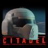

Citadel - Original version
Citadel has been developed by Virtual Design between February 1994 and May 1995. The main team consisted of 4 people (1 developer, 2 graphics designers, 1 musician) although several other people were involved part time, such as level designers and testers.
It has been released in 1995 in Poland by Arrakis Software as Cytadela, and in the UK and Germany by Black Legend as Citadel. The three versions had different locales in parts of the game, and the German version had some of the graphics modified (humans replaced by robots) because of regulatory limitations related to depicting shooting of human beings in video games at the time.
The Citadel had strong 3D FPS competition on the Amiga at that time, with titles such as Breathless, Fears, Aliend Breed 3D, Gloom or Behind the Iron Gate released around the same year. However, Citadel was one of the few games of the type that targetted not just the A1200 and higher end models but also the A500, with 1MB of memory required to play. It also suports a large number of in-game objects (enemies, items, different sized objects, partially transparent multi-layered walls etc.) without a significant performance penalty. It has been written entirely in assembler to make the most out of the Amiga hardware and was at the time the most graphically advanced 3D game for the A500, although due to performance limitations practically playable only in a very small window.
The Citadel sold about 1500-1600 copies in Poland, and an undisclosed number in the UK and Germany since Black Legend closed down in 1996 and Arrakis Software not long after, due to the decline of the Amiga market.
All files below are provided under the GNU GPLv3 License. Private use and distribution is allowed and free, any commercial use should be agreed with the authors.
Downloads
| File information | Link |
|---|---|
| Original 5 disks (Polish) |
Local download My Abandonware The Old Computer |
| Original 5 disks (English) |
Local download My Abandonware The Old Computer |
| WHDLoad full version (English) | Local download WHDLoad site |
| WHDLoad HD installer (Polish) | Local download |
| WHDLoad HD installer (English) | Local download |
| Disk 1 cracked (Polish) | Local download |
| Demo version - one level (English) | Local download |
| Level Editor (Polish) | Local download |
| Full manual pdf (Polish) |
Local download Amiga Hall of Light |
| Full manual pdf (English) |
Local download Amiga Hall of Light |
| Draft manual txt (Polish) | Local download |
| Copy protection codes | Local download |
| Cheat codes | Local download |
| Music (mod files) | My Abandonware |
| Source code (MC68k assembler) | Github |
| Reviews (UK and US) |
Amiga Magazine Rack Amiga Hall of Light Amiga Reviews |
| Reviews (Polish) |
Top Secret #42 (Internet Archive) PPA |

Citadel Remonstered
In February 2022 part of the original Virtual Design team, Pawel and Artur, decided to give the almost 30 years old game a makeover. This was driven largely by problems on fast Amigas and emulators, on which the game was unplayable due to poor handling of speed scaling - it had originally not been properly tested beyond A3000 because of difficult access to high end Amigas in the 1990s. Another incentive was the prospect of releasing Citatel on the A500 Mini, which simply required some fixes and changes to add contorller support. Because some of the code and assets had been lost in time, the way forward was to update and replace the main part of the game (the "engine") using WhdLoad. The English Citadel version was used as the starting point. The project finally grew from the originally planned 1-2 weeks to over a month. The final (so far) release 1_3_22_03_30_02 on the 30th of March 2022 included a major performance overhaul of the engine, level and graphics, and a number of other fixes:
- The 3D rendering engine has been optimised as much as possible within the current game architecture, resulting in a 4-6x performance increase
- Gameplay has been improved by implementing additional usability features such as WASD+mouse simultaneous control, CD32 type controller support, auto-weapon change etc.
- Level graphics has been significantly updated including textures and enemies
- Level maps have been corrected or re-designed for better playing experience, fast-paths added in huge levels
- Difficulty has been re-balanced
- FPS counter added
- Crosshairs added
- Speed issues fixed on fast machines: 030/040/060, overclocked CPUs, PiStorm, Vampire, Warp1260 and other accelerators, and fast emulators. Speed capped to 50fps.
- Manual has been re-written with an extended back-story and updated content
In the videos showcasing performance, linked above, the top counter is FPS and the bottom is the equivalent in frames used to render a scene on a 50KHz PAL system. On a stock A1200 with an additional 1MB of Fast RAM, which was the main optimisation target, this version is perfectly playable at around 12fps (18-20 without textured floors and ceilings) in a 1x1 pixel 160x128 window.
We optimised, but did not fundamentally change, the original 3D engine. It is still quite capable and some tricks like those in this video allow to achieve a really nice feel of varying vertical positions of floors and ceilings. This has however not been used in the original level design, although lowered ceilings are included in some places in the Remonstered version.
All files below are provided under the GNU GPLv3 License. Private use and distribution is allowed and free, any commercial use should be agreed with the authors.
Downloads
| File information | Link |
|---|---|
| WhdLoad full version v1_3_22_03_30_02 (LHA) |
Local download Aminet |
| WhdLoad full version v1_3_22_03_30_02 (ZIP) | Local download |
| Manual | Local download |

Citadel Evacuation
In 2021, part of the original Virtual Design team, Pawel and Artur, began work on a continuation of the original game: Citadel: Evacuation.
The story picks up where Citadel ended — with the main protagonist leaving planet B104‑GS12 in a small, one‑person reconnaissance spacecraft after finally destroying the experimental BioTEC facility. After reaching orbit, he once again finds himself alone with his thoughts and with no apparent means of rescue, light‑years from Earth...
However, it soon becomes clear that he is not the only one orbiting B104‑GS12. A starship looms in the distance — silent, observing, waiting — seemingly ready to rescue the lone survivor... or is it?
The implementation was also done in assembler and progressed to the point of creating the loader, main menu, mission‑selection system, and adding various pieces of background information to the main story. The game was originally intended for Amigas with at least 2MB of memory, likely ruling out the A500. Work stopped after about two months when we realised the game would not feel compelling if it simply reused the old 3D engine. Even with some additional tricks the engine was capable of, it would have played more like an add‑on with new levels for the original game. To remain competitive with contemporary 3D titles on fast, modern Amigas, the entire engine would have needed a complete rewrite to support features such as flexible wall angles, vertical movement, multiple vertical planes, improved textures, lighting and shading support, and more. The scope of work required far exceeded the time available, so the project was ultimately shelved.

OpenGL version
In 2006, Tomasz Kazmierczak (joined later by additional people) implemented and released a free OpenGL port of Citadel, which works on Windows, Linux and MacOS. This version tries to stay as close to the original as possible with some differences due to, in the end, not running on an Amiga and using the OpenGL rendering engine. That was a truly impressive feat, because it required reverse-engineering the games algorithms, some of the assets (not all could be provided), data formats (such as maps and event chains). There has been several releases from the original 0.6 in 2006, to 1.1.0 in 2013, adding some functionality , support for several langiages (Polish, English, German, French and Czech), different screen resolutions, and fixing bugs.
Both the code and all compiled releases are available to download and use under the GNU GPLv3 License.
Links and Downloads
| File information | Link |
|---|---|
| Cytadela OpenGL project page | SourceForge |
| All Releases | SourceForge |
| Latest Release | SourceForge |
A500 Mini version
https://retrogames.biz/games/amiga/citadel/
Evercade version
Ut enim ad minim veniam, quis nostrud exercitation ullamco laboris nisi ut aliquip ex ea commodo consequat. Duis aute irure dolor in reprehenderit in voluptate velit esse cillum dolore eu fugiat nulla pariatur.
WebGL version
Ut enim ad minim veniam, quis nostrud exercitation ullamco laboris nisi ut aliquip ex ea commodo consequat. Duis aute irure dolor in reprehenderit in voluptate velit esse cillum dolore eu fugiat nulla pariatur.